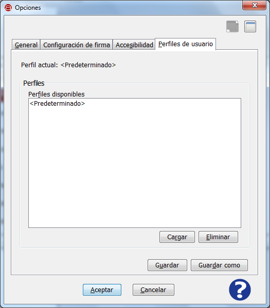

Es posible acceder a las opciones de Perfiles de usuario de la Interfaz de Escritorio del Cliente @firma mediante el elemento "Opciones" del menú "Herramientas" y pestaña "Perfiles de usuario".
La pantalla de Opciones de Perfiles de usuario es la mostrada a continuación:

La funcionalidad de esta pantalla es la de guardar un perfil de usuario en el que se almacene la configuración indicada en las pestañas "General", "Contexto de firma" y "Accesibilidad" del menú de Opciones
En esta pantalla se indica en primer lugar el perfil cargado actualmente.

A continuación se muestra un listado con todos los perfiles disponibles. Siempre existirá el perfil Predeterminado, que es la configuración por defecto de la herramienta.

Con este listado de perfiles se pueden realizar dos acciones:
Para guardar y modificar un perfil se hace uso de dos botones:
Al pulsar el icono de ayuda se muestra la ventana de ayuda para el menú "Perfiles de usuario".